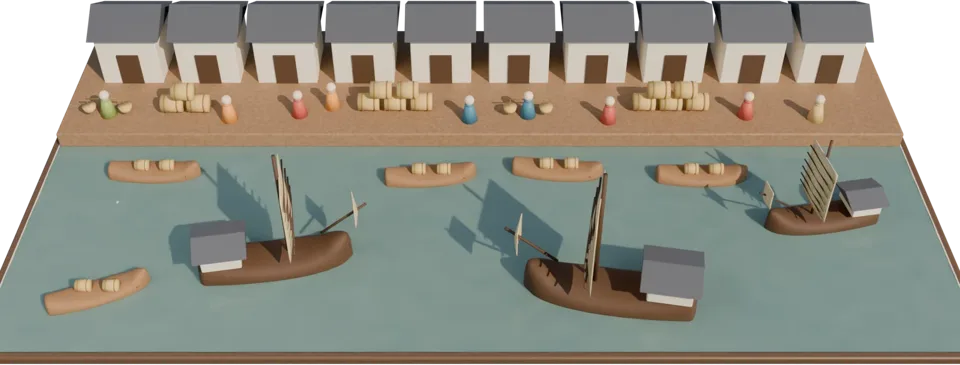
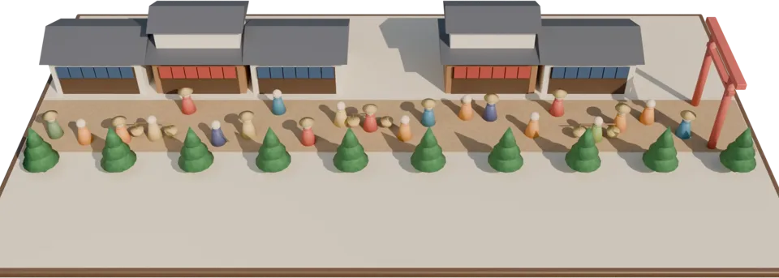

文字の大きさ
第3時文化を支えた産業と交通
つかむ調べるまとめる
教科書 p.160〜161
学習問題江戸時代には、どのような文化や学問が生まれたのだろう。
この時間のめあて産業や交通が発達して、人々の暮らしはどう変わったのだろう。
この時間のポイント
1天下の台所・大阪の港

蔵が並ぶ大阪の港（イメージの模型）
全国の大名は大阪に蔵屋敷を構え、年貢米や特産物を運んで、商人を通して売りさばき、現金にかえました。大阪を中心に、全国をつなぐ航路も発達しました。
教科書で確かめようp.160 資料ア・p.161 資料オ
2農業の工夫
新田開発がさかんに行われ、新しい農具や肥料のくふうで、生産が高まりました。綿花やなたね、茶、藍などの商品作物を育てて、現金収入を得る農民も増えました。耕地面積の変化はグラフで確かめましょう。
教科書で確かめようp.160 資料イ・ウ
3旅を楽しむ人々

街道と宿場（イメージの模型）
暮らしにゆとりが生まれた人々の間では、伊勢参りなど、お参りと楽しみをかねた旅が流行しました。
教科書で確かめようp.161 資料エ・カ
4つながりを整理しよう
教科書で確かめようp.160〜161
考えてみよう
- 産業や交通が発達して、各地の様子や人々の暮らしはどのように変わったのだろう。
- 縄文
- 弥生
- 古墳
- 飛鳥
- 奈良
- 平安
- 鎌倉
- 室町
- 安土桃山
- 江戸
- 明治
- 大正
- 昭和
- 平成
- 令和